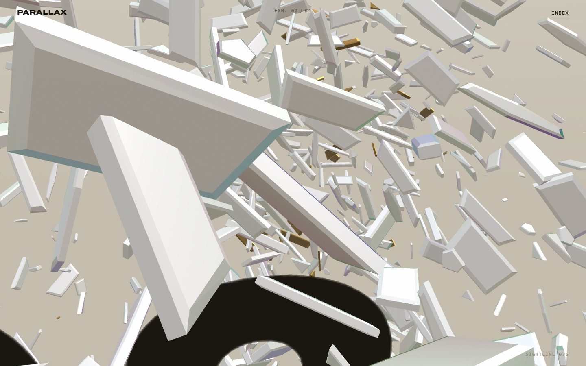
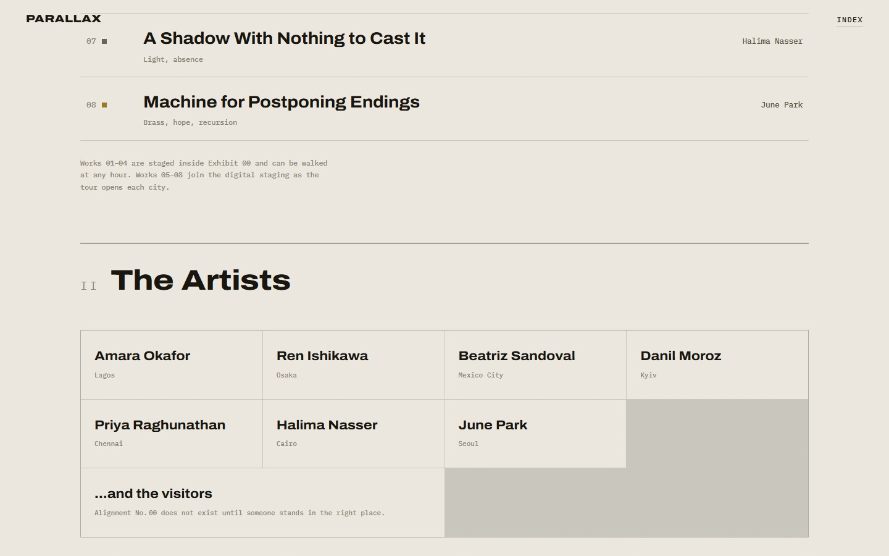

PARALLAX — Exhibit 00
A five-act exhibition that lives entirely in the browser: hand-placed beveled geometry, one porcelain material system with a strict scarcity of colour, and a camera that walks you from act to act like a visitor with a docent. Built as our own benchmark for what a six-figure web experience should feel like — then given a second, harder art-direction pass when the first version was judged not art-directed enough. The difference between those two versions is the studio’s actual product.


